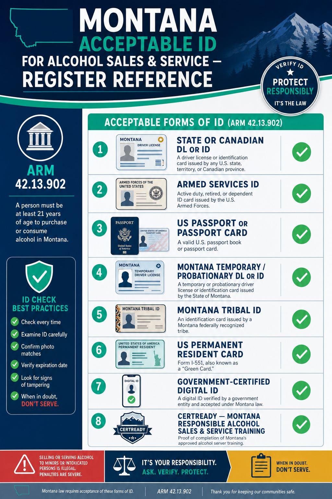
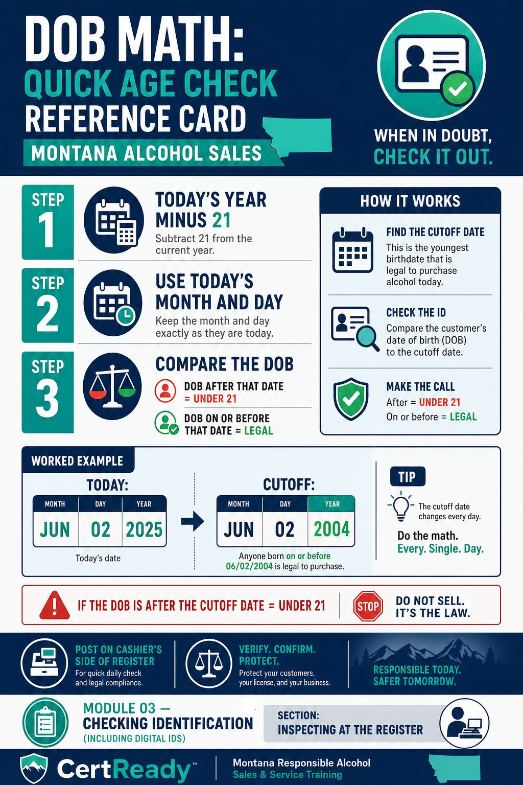
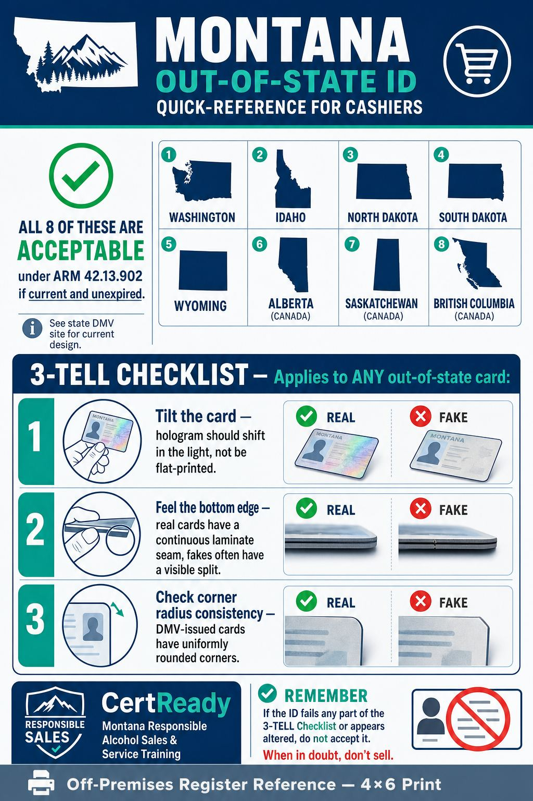
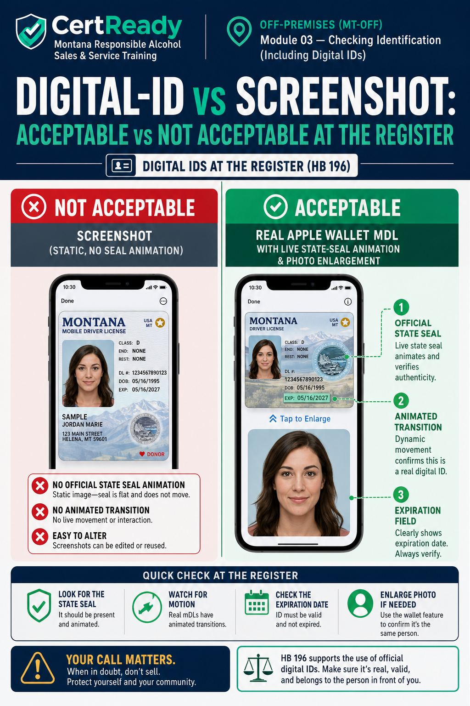
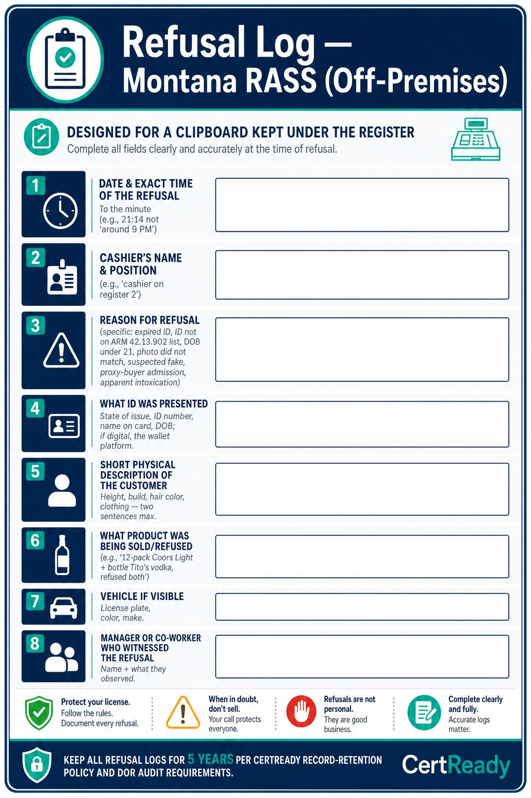

Montana ARM 42.13.902 is a closed list. Anything not on it, you don't accept - even if it has a photo, a DOB, and looks official.
Outcomes: K5
Off-premises course module
Montana's acceptable ID list per ARM 42.13.902, with HB 196 digital IDs and tribal IDs - register edition
This page mirrors the student lesson content and infographics so Montana CARD can review it without using the CertReady LMS.
Montana ARM 42.13.902 is a closed list. Anything not on it, you don't accept - even if it has a photo, a DOB, and looks official.
Outcomes: K5

Outcomes: K5
The seven federally recognized Montana tribes whose IDs are accepted:
Blackfeet Nation
Chippewa Cree (Rocky Boy's)
Confederated Salish & Kootenai (Flathead)
Crow
Fort Belknap (Assiniboine & Gros Ventre)
Fort Peck (Assiniboine & Sioux)
Northern Cheyenne Out-of-state tribal IDs are NOT on the list.
Outcomes: K5
**NOT acceptable
refuse on sight:**
Photocopies or photos of any ID
Expired ID of any kind
School / college / university IDs
Library cards, warehouse-club cards (Costco, Sam's), voter-registration cards
Birth certificates (no photo)
Out-of-state tribal IDs
Screenshots of a digital ID (the credential must verify, not be a static image) "It's all I have" is not a valid reason to make an exception.
Outcomes: K5
Outcomes: P1, P2
DOB math, made easy.
Subtract 21 from the current year
Use today's month and day
Anyone whose DOB is after that date is under 21 Example for May 8, 2026: cutoff is May 8, 2005. Born May 8, 2005 or earlier = legal. Born May 9, 2005 or later = under 21.

Outcomes: P2
The vertical-vs-horizontal layout tell. Most US states issue licenses in horizontal layout for adults (21+) and vertical layout for minors (under 21). A vertical license = check the DOB even more carefully. A horizontal license held by someone who looks young still gets the full inspection - but a vertical license should never be cleared without confirming the customer crossed 21 since the card was issued.
Outcomes: P1
Out-of-state IDs at a Montana register. Montana borders four states (Wyoming, Idaho, North Dakota, South Dakota) and is one province from Canadian travelers (Alberta, Saskatchewan, British Columbia). At a typical Montana register, you'll see out-of-state US driver's licenses on roughly one in five transactions and Canadian licenses on ski-resort weekends and during summer through Glacier and Yellowstone. Every one of them is acceptable under ARM 42.13.902 if it's current
but every one of them looks different from a Montana DL, so the fake-ID tells are different too. The single best protection is to spend 30 seconds the next time someone hands you a license from a state you've never seen, and compare it to a known real one. State DMV websites publish public reference images of their license designs; many cashiers print one for each neighboring state and tape them inside the register drawer. The three out-of-state features that catch most fakes: the hologram (does it shift in the light, or is it flat ink), the bottom-edge laminate (real cards have a continuous strip; fakes often have a visible seam), and the corner-radius consistency (a card cut with consumer-grade scissors will have slightly different corner curves from a real DMV-issued card). One tactile check, one tilt-and-look check, one edge check
under ten seconds total once it's a habit, and that ten seconds is the cheapest insurance you have against a personal misdemeanor charge.

Outcomes: P1, K5
The 'obvious adult' trap. Every cashier has had it happen: a customer walks up with a 12-pack, looks 40, dresses like they just left a construction site, and you're tempted to skip the ID. Don't. The two highest-risk transactions in convenience-store data are (1) customers who look obviously under 21 (everyone IDs them; rarely a violation source), and (2) customers who look 30+ and carry an ID for a 19-year-old who paid them $20 to buy a case (almost never IDed; a frequent decoy-program source). Montana's compliance checks under ARM 42.13.907(1)(d) regularly use 25-to-30-year-old decoys precisely because cashiers wave them through. Every customer buying alcohol gets the same check, full stop. The 20 seconds you'd save by skipping the check is not worth a $250 first-offense fine, a $1,000 second-offense fine, or the criminal exposure under MCA 16-6-305 if it turns out the person was buying as a proxy.
Outcomes: K6, P1
Effective October 1, 2025, Montana accepts government-certified digital IDs. The customer holds them in Apple Wallet, Google Wallet, or a state-specific app. To be valid, the credential must be the OFFICIAL state credential - not a screenshot of a license, and not a third-party app like ID.me.
Outcomes: P1, K5
Outcomes: P1
Falsifying a digital ID is a separate offense under MCA 16-6-305 (HB 196 amendment). If you suspect a fake digital ID:
Refuse the sale
Document the incident in the log
Don't try to seize or hold the phone
Call the manager
Outcomes: K5, K6
What the verification interaction actually looks like. A real Montana mobile driver's license presented from Apple Wallet or Google Wallet is interactive, not a static image. When the customer taps to present, the screen animates and shows the official Montana state seal, the cardholder's photo, the date of birth, and an expiration date. On Apple Wallet, the photo briefly enlarges as part of the live-presentation animation; on Google Wallet, the seal pulses. A screenshot of a license, by contrast, sits motionless - no animation, no state seal that responds to a tap. That's the easiest tell. If the customer hands you their unlocked phone showing a photo of a license, that is not a digital ID under HB 196; it is a screenshot and you cannot accept it. The same applies to PDF copies emailed to themselves, third-party 'ID-storage' apps not certified by the state, and ID.me or similar federal-identity apps not on the Montana acceptable-credentials list. Only the credential issued through the Apple Wallet mDL platform, Google Wallet mDL platform, or the Montana state app counts under ARM 42.13.902 as amended by HB 196.

Outcomes: P1, K5
Outcomes: K6
Watch the parking lot. A pattern that catches a lot of off-premise minor sales: the customer pays cash and quickly walks out to a waiting car with people who look much younger. If the same vehicle keeps coming back with different "buyers," that's a fake-ID-ring or proxy-buyer pattern. Note the plate, tell the manager, and call DOR if it persists.
Outcomes: K6
Sell or refuse?
Scenario 1: The DOB math. A customer hands you a Montana driver's license. Photo matches. The DOB shows 03/15/2005. Today is May 8, 2026. They want to buy a 12-pack.
Outcomes: P2
What's the right call?
Scenario 2: The shoulder-tap. You're at the register at 9 p.m. A 23-year-old comes in with a 12-pack. As they walk in, you saw them through the window standing in the parking lot with three teenagers who didn't enter. They put the beer on the counter and pull out cash. As you ring it up, the door dings - one of the teens has come in to ask, "are they coming back out?"
Outcomes: K6, P1
What's the right move?
Scenario 3: The screenshot. A customer at the register on a Friday at 7 p.m. wants to buy two bottles of premium vodka and a bottle of bourbon - about $130 total. They open their phone and show you a photo of a Montana driver's license on the screen. The DOB on the photo reads 04/12/1999. The customer says, 'It's the same as a digital ID, the new law says you have to take it.'
Outcomes: P1, K5
Outcomes: P1, K6
Don't seize a suspected fake ID. Hand it back. Some cashiers grab the card and say "I'm keeping this." Keeping a suspected fake ID can create legal risk, including a possible property claim. The safer course is to hand it back, refuse, and document.
Hand the ID back
Refuse the sale
Document description, time, ID details (state, ID number, name)
Note the description of the customer for a possible police report Let law enforcement decide what happens to the card.
Outcomes: P1

Outcomes: P1, K6
Why the log matters more than the refusal itself. A refusal you don't document is hard to defend later. If the same customer comes back the next night with a friend who buys for them, or if the customer files a discrimination complaint, or if DOR investigators audit your licensee after a compliance check, the log is the evidence that the refusal happened, when it happened, and why. A cashier who can show a contemporaneous log entry from 21:14 last Tuesday is in a fundamentally different position from one who says 'I'm sure I refused someone like that.' Make the entry before your shift ends - memory degrades fast under retail conditions, and a log entry written three days later from memory is worth roughly nothing in an administrative hearing. The licensee should keep all refusal logs for at least 5 years to align with CertReady's record-retention policy and Montana DOR's typical audit window.
Outcomes: P1
Outcomes: K6, P1
The cashier's protection. Montana DOR routinely investigates licensees for sales-to-minors and sales-to-intoxicated violations. The licensee can be fined under ARM 42.13.101 (progressive penalty schedule: $250 / $1,000 / $1,500 + 20-day suspension / revocation across a 3-year lookback). The cashier personally can face criminal exposure under MCA 16-6-305 - up to $500 fine and up to 6 months in jail per MCA 46-18-212. A contemporaneous log entry showing you refused is the single best protection you have if a compliance check or complaint later questions whether the refusal happened. Refuse → document → escalate. In that order. Every time.
Outcomes: K6, P1
Passing score: 80%
Which is NOT acceptable as ID under ARM 42.13.902?
Correct answer: c. Photocopy of ID
Outcomes: K5
What did HB 196 add to the acceptable-ID list?
Correct answer: b. Government-certified digital IDs
Outcomes: K5
If today is May 8, 2026, the latest DOB still legal to sell to is:
Correct answer: b. May 8, 2005
Outcomes: P2
A screenshot of a state ID counts as a digital ID under HB 196.
Correct answer: false. False
Outcomes: P1
An adult tells the cashier 'this 6-pack is for my buddy waiting outside, here's his money.' Best response?
Correct answer: b. Refuse the sale - this is a proxy-buyer admission
Outcomes: K6
A vertical-layout US driver's license is typically issued to whom?
Correct answer: b. Holders under age 21
Outcomes: P1
How should a cashier handle a suspected fake ID?
Correct answer: b. Hand the ID back, refuse the sale, document the incident
Outcomes: P1
Name two off-premises decoy tactics minors use to obtain alcohol.
Outcomes: K6